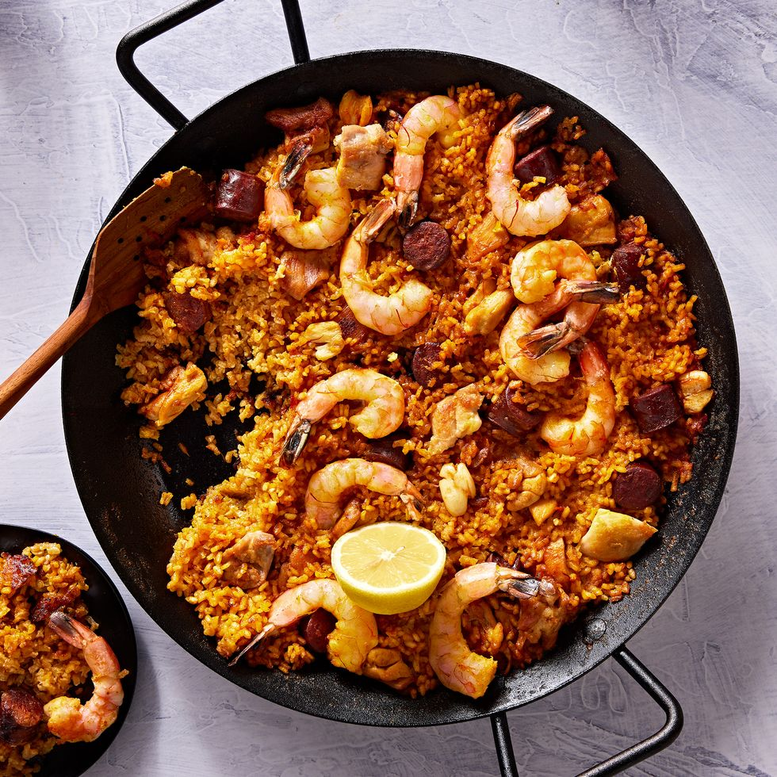

Paella

Description:
-
Sauté: Add olive oil to a skillet over medium heat. Add onion, bell peppers and garlic and sauté until
onion
is translucent. Add chopped tomato, bay leaf, paprika, saffron, salt and pepper. Stir and cook for 5
minutes.
- Add white wine. Cook for 10 minutes.
- Add chicken & rice. Add chopped parsley and cook for 1 minute.
- Add broth. Pour the broth slowly all around the pan and jiggle the pan to get the rice into an even
layer. (Do not stir the mixture going forward!). Bring mixture to a boil. Reduce heat to medium low. Give
the pan a gentle shake back and forth once or twice during cooking.